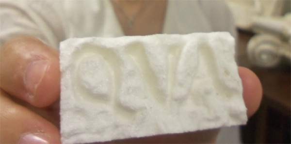
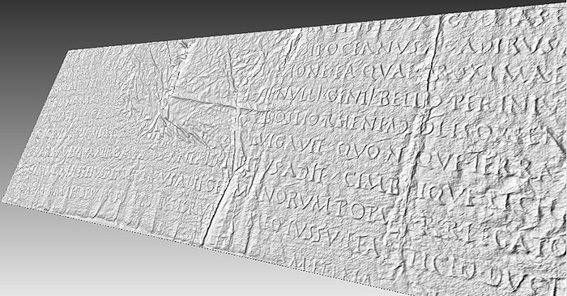

GAINESVILLE, Fla.
September 6, 2013.
Here is a challenge: An archaeologist in Europe wants to share an important ancient inscription with a colleague in a north American university. It would be nice if she can teletransfer the inscription so that her colleague can receive it as a tridimentional tangible physical object so it can be studied better.
An interdisciplinary team from the University of Florida and the Cornell University successfully achieved the first tele-transferring of 3D inscriptions between their institutions and printing in 3D of the transmitted artifacts. This is an important step towards the electronic dissemination of tri-dimensional epigraphic material to the academic community as it facilitates the study of ancient inscriptions, according to the Associate Director Dr. Eleni Bozia, who led this experiment.

This novel networked pipeline of computer algorithms allows scientists to digitize effectively an inscribed object and disseminate it to other scholars in its original tri-dimensional printable form1.
Dr. Eric Rebillard (Classics and History, Cornell University) and Dr. Ben Anderson (History of Art, Cornell University) with Rhea Garen (Institute for Digital Collections, Cornell University) scanned a set of ancient inscriptions, which were transferred through this novel pipeline to the University of Florida, where the Digital Epigraphy group Dr. Eleni Bozia (Classics, University of Florida), Dr. Robert Wagman (Classics, University of Florida) and Dr. Angelos Barmpoutis (Digital Worlds Institute, University of Florida) reconstructed in 3D the original object and printed a tri-dimensional copy of the tele-transferred inscription.
This experiment was performed on a set of squeezes of the Res Gestae made on the Monumentum Ancyranum in 1907. According to Prof. Rebillard "this collection of squeezes is a very valuable testimony to the inscription that had much suffered since and it even has the potential of being a better testimony than the Mommsen casts upon which all modern editions are based."

This important archaeological evidence can now be easily accessed and studied by scholars using the web interface of the Digital Epigraphy Toolbox2. Follow this link for a direct access to the 3D model of the inscription in full screen view. One of the advantages of the Digital Epigraphy Toolbox viewer is that it can be easily embedded into websites or other databases by using the following HTML tag:
The DEA editorial team
References:
1. A. Barmpoutis, E. Bozia, R. S. Wagman, "A novel framework for 3D reconstruction and analysis of ancient inscriptions", Journal of Machine Vision and Applications
2010, Vol. 21(6), pp. 989-998. PDF
2. Digital Epigraphy Toolbox, www.digitalepigraphy.org/toolbox.
Funded in part by the NEH grant HD-51214-11.